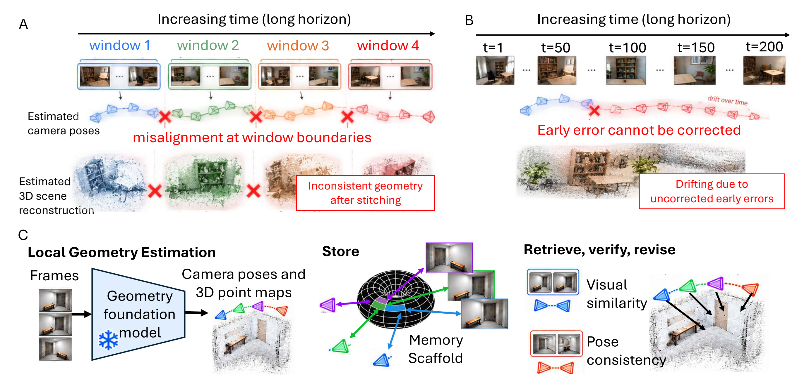
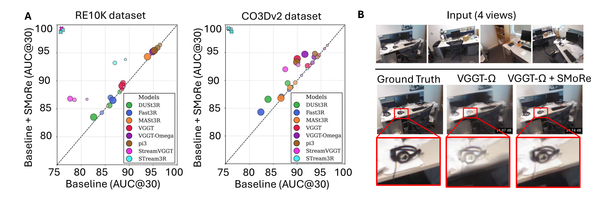

Problem Setup
01 · Problem Setting and the Revision Question
长序列重建的难点不是单个窗口能否预测点图，而是窗口之间的全局放置会随时间漂移。固定窗口的 feed-forward 模型通常先分别重建再拼接；streaming 模型能传递状态，却往往没有机制在后续证据出现时修改早先结果。
SMoRe 的问题定义是：给一个 RGB 流和一个冻结的几何基础模型，能否在不重新训练 backbone 的情况下，保存历史观测，并在重访旧区域时验证和修正历史窗口的全局位姿？这里的“修正”作用于窗口放置，不等同于重新生成每个窗口内部的局部几何。
因此方法的可检验对象是长序列的一致性：相机轨迹、跨窗口点图、SLAM 轨迹和由几何支持的 novel-view synthesis 是否因回环修订而改善。
Representation
02 · What Is Stored: Spatial Scaffold and Content Bank
每个重叠窗口包含 32 帧，连续窗口默认共享 16 帧。几何模型以窗口首帧为局部坐标原点，输出局部相机位姿与 point map；一个 Sim(3) 变换 T_k 把该窗口放到全局坐标系。局部结果保留在源窗口坐标中，后续修订主要更新 T_k。
Content bank 保存帧、相机姿态和点图。Spatial scaffold 把“在哪里观察”编码成可寻址状态：位置使用三个不同尺度的周期模块，yaw、pitch、roll 使用三个 continuous attractor ring；拼接得到 g_i，再用固定随机线性投影映射到 1024 维 h_i，只保留最大的 64 个激活并归一化。
稀疏地址的意义是降低不同位置之间的干扰，使视觉内容能和空间状态形成关联。它不是一个按帧 ID 查表的缓存：查询时并不知道被重访帧的身份，需要用当前观测作为部分线索反推出候选历史。
Mechanism
03 · Store, Retrieve, Verify, Revise

Soumick Sarker and Mengmi Zhang · 2026 · Paper: CC BY 4.0 · Unmodified original figure · Paper & Caption ↗
Store：窗口完成局部预测后，将新帧的视觉描述、局部几何和当前全局放置写入 content bank，并通过 scaffold 关联空间与视觉。Retrieve：当前帧的视觉描述查询 scaffold，返回可能处于同一空间位置的历史帧，而不是直接把相似外观视为回环。
Verify：把当前窗口和检索到的历史窗口联合送入几何模型，得到历史窗口对当前窗口放置的 proposal。若当前窗口原有放置与检索 proposal 的相对变换一致，则接受该重访；否则拒绝，避免一次错误检索把整条轨迹拉到错误位置。
Revise：接受的重访给出窗口级 Sim(3) 纠正。作者把纠正分配给受影响的历史窗口，并同步移动其相机和点图；同时记录窗口之间的约束，最后可做 global refinement。这个路径把回环证据变成可回写的全局状态，而不是只把历史 token 追加到下一次输入。
Equations
04 · Geometry of the Update
设第 k 个窗口的局部点为 p_i^k，窗口的全局放置为 T_k∈Sim(3)，则全局点可写为 P_i=T_k p_i^k。验证阶段产生一个由历史证据支持的放置 proposal T̂_k；只有在 proposal 与现有放置的相对误差通过阈值检查后，才更新 T_k。
Sim(3) 同时包含旋转 R、平移 t 与尺度 s，可写成 T(p)=sRp+t。采用它是因为单目几何模型的窗口间尺度可能不一致；但这也意味着尺度纠正会改变全局点云的尺度解释。局部窗口内的相对几何不因全局放置更新而改变。
把修订理解为“移动存档结果”有助于区分两种误差：局部预测误差需要重新推理或更强 backbone；窗口间漂移则可以由回环约束修订。SMoRe 主要针对后者。
Experiments
05 · Evaluation Protocol and Evidence

Soumick Sarker and Mengmi Zhang · 2026 · Paper: CC BY 4.0 · Unmodified original figure · Paper & Caption ↗
作者用 8 个几何模型、5 类任务评估，包括相机位姿、Replica 与 ScanNet++ 的多视深度/点云、7-Scenes SLAM，以及 7-Scenes 和 CO3Dv2 的 novel-view synthesis。关键对照是同一 backbone 在没有和加入 SMoRe 时的长序列表现。
论文摘要报告：多视深度误差最高下降 58%，点云 Chamfer 距离最高下降 43%，长时 SLAM 的平均轨迹误差最低到 2.9 cm。Figure 2 将不同序列长度的 pose AUC 与 novel-view 结果并列，显示收益随序列变长更明显；不能把这些上限数字理解为所有 backbone、数据集和指标的统一增益。
设计消融还区分 scaffold 是否改善检索、哪种视觉描述子查询、历史证据数量、窗口大小与 scaffold 容量。计算与内存附录测量序列长度增加时的峰值 GPU 内存；因此“外部 memory”不等于无限存储，增长和 pruning 仍是实验变量。
Discussion
06 · Limits and Relation to Streaming Memory
SMoRe 的优点是接口清晰：几何模型保持冻结，memory 在模型外部做长期保存和修订，因而可以跨模型复用。它也继承了几何基础模型的失败：如果当前和历史窗口没有足够重叠、视觉描述检索错误或局部 point map 已经错误，验证无法凭空恢复真实结构。
论文的训练-free 设定适合研究“记忆机制本身”的效果，但它没有学习一个任务专用的写入策略；地址、阈值和全局优化仍由工程协议决定。与 LingBot-Map 等 streaming state 相比，SMoRe 更像可回溯的外部地图层：它允许改动已输出的全局放置，而不是只向前传递一个不可回看的隐状态。
对语义几何 memory 的启发是：语义可以作为检索和验证的附加线索，但不能替代 Sim(3) 几何一致性。若将对象语义用于地址，必须保留几何证据与不确定性，并评估错误语义是否会把两个相似位置错误合并。
Discussion
Reading Questions
What exactly is revised?
主要被修订的是窗口在全局坐标系中的 Sim(3) 放置 T_k，以及随之移动的相机和点图；窗口内部局部点的相对结构不是由一次回环直接重算。
Why is retrieval followed by verification?
视觉相似只能产生候选，不能证明是同一空间位置。联合几何推理提供历史放置 proposal，再与当前放置比较，减少错误回环传播。
Is SMoRe an online learned memory?
它在线更新外部 memory，但论文强调 backbone 冻结且无需训练或微调。因此“在线”描述的是推理时存储、检索和修订，不是通过梯度在线学习。
What can be transferred to semantic memory?
可迁移的是 store–retrieve–verify–revise 的控制闭环；语义向量适合帮助候选检索，最终写回仍应由几何一致性和置信度门控。
References
Figures are reproduced from the paper under the arXiv CC BY 4.0 license; captions identify the original figure numbers.
Verified on 2026-10-16. Paper results refer to the linked versions. Repository references were checked on this date.